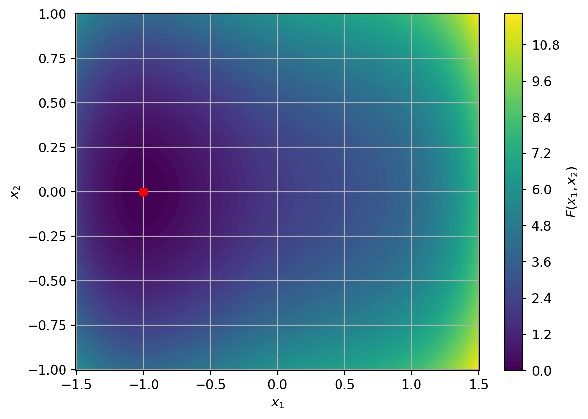

7 What about functions with higher dimension domains?
When we were working with function \(F \colon \mathbb{R} \to \mathbb{R}\), we had the key idea to find the points where the derivative of \(F\) is \(0\). We have developed theory to tell us when these points are local or global minima and some methods to find these points.
When working with functions with two dimensional (or more) domains, how do we compute derivatives?
Throughout this section we will work with the example function: \[ F(x_1, x_2) = x_1^4 - x_1^2 + 2 x_1 + 4 x_2^2 + 2. \]
Some how we want to have the idea that if you move away from the minimum in any direction then the function increases. Mathematically, we could write this as saying: Given a direction \(\vec{d} \in \mathbb{R}^n\), a point \(\vec{x}^*\) is a local minimum if \[ F(\vec{x}^* + h \vec{d}) \ge F(\vec{x}^*) \quad\text{for all small}\quad h. \] We could try to use our ideas from one dimension then by considering the function \(D_{\vec{d}} \mathbb{R} \to \mathbb{R}\) given by \[ D_{\vec{d}}(h) = F(\vec{x}^* + h \vec{d}). \] This is a well defined one-dimensional function so we can apply all our theory as before.
TODO I think we need the directional derivative at \(h=0\).
Example 7.1 Consider the function \[ F(x_1, x_2) = x_1^4 - x_1^2 + 2 x_1 + 4 x_2^2 + 2 \] and the directions \(\vec{d} = (1, 0)^T, (0, 1)^T\) and \((1, 1)^T\). Find \(D_{\vec{d}}(h)\) and \(D'_{\vec{d}}(h)\) at \(\vec{x}^* = (-1, 0)\).
- For \(\vec{d} = (1, 0)^T\), we have \[\begin{align*} D_{\vec{d}}(h) & = F(-1 + h, 0) \\ & = (-1 + h)^4 - (-1+h)^2 + 2 (-1+h) + 4 \times 0^2 + 2 \\ & = (-1)^4 + 4 \times (-1)^3 \times h + 6 \times (-1)^2 \times h^2 + 4 \times (-1) \times h^3 + h^4 - (-1)^2 - 2 \times (-1) \times h - h^2 + 2 \times (-1) + 2 \times h + 0 + 2 \\ & = 1 - 4h + 6 h^2 - 4h^3 + h^4 - 1 + 2h - h^2 - 2 + 2h + 2 \\ & = h^4 - 4h^3 + 5 h^2, \end{align*}\] so \[\begin{align*} D'_{\vec{d}}(h) & = 4 h^3 - 12 h^2 + 10 h. \end{align*}\]
- For \(\vec{d} = (0, 1)^T\), we have \[\begin{align*} D_{\vec{d}}(h) & = F(-1, 0 + h) \\ & = (-1)^4 - (-1)^2 + 2 \times (-1) + 4 h^2 + 2 \\ & = 1 - 1 - 2 + 4 h^2 + 2 = 4 h^2, \end{align*}\] so \[\begin{align*} D'_{\vec{d}}(h) & = 8 h. \end{align*}\]
- For \(\vec{d} = (1, 1)^T\), we have \[\begin{align*} D_{\vec{d}}(h) & = F(-1 + h, 0 + h) \\ & = (-1 + h)^4 - (-1+h)^2 + 2 (-1+h) + 4 \times h^2 + 2 \\ & = (h^4 - 4 h^3 + 5 h^2) + (4 h^2) \\ & = h^4 - 4 h^3 + 9 h^2, \end{align*}\] so \[\begin{align*} D'_{\vec{d}}(h) = 4 h - 12 h^2 + 18 h. \end{align*}\]
We note that each derivatives depends on \(h\) and that for each derivative we have \(D'_{\vec{d}}(0) = 0\).
The object we have been computing in this example is called the directional derivative:
Definition 7.1 Let \(F \colon \mathbb{R}^n \to \mathbb{R}\). The direction derivative of \(F\) at \(\vec{x}\) in a direction \(\vec{d}\) is given by \(D'_{\vec{d}}(h)\).
There is something slightly strange about how directional derivatives depend on both the direction and the size of \(\vec{d}\). However this is simply part of the definition and something we should be aware of when doing this type of computation.
So we might want to think about building theory based on directional derivatives. However, as we have seen in the picture of \(F\) above, there are still lots of directions to check. We have checked 3 different directions but there are still infinitely many to do!
There is something else we can do, and the calculations for the direction \(\vec{d} = (1, 1)^T\) give us a clue! We saw that \[ D'_{(1, 1)^T}(h) = D'_{(1, 0)^T}(h) + D'_{(0, 1)^T}(h). \] This is also true in general: \[\begin{align*} D'_{\vec{d}^{(1)} + \vec{d}^{(2)}}(h) = D'_{\vec{d}^{(1)}}(h) + D_{\vec{d}^{(2)}}(h) \\ D'_{w \vec{d}}(h) = w D'_{\vec{d}}(h). \end{align*}\] So if we can find a basis (remember that term from semester 1?!?), we can write any directional derivative in terms of the basis vectors. We can make a simple choice for this: the coordinate axes!
Let \(\vec{e}^{(j)}\) be the vector with \(1\) in the \(j\)th place and \(0\) in every other place for \(j = 1, 2, \ldots n\). For example in \(\mathbb{R}^2\), we have \(\vec{e}^{(1)} = (1, 0)^T\) and \(\vec{e}^{(2)} = (0, 1)^T\). These form a basis. So any direction \(\vec{d}\) can be written as \[ \vec{d} = (d_1, d_2, \ldots, d_n) = \sum_{j=1}^n d_j \vec{e}^{(j)}, \] so that \[ D'_{\vec{d}}(h) = \sum_{j=1}^n d_j D'_{\vec{e}^{(j)}}(h). \]
This idea is special enough that we give the terms \(D'_{\vec{e}^{(j)}}(h)\) a special name: partial derivatives, and there is a slightly simpler way to calculate them.
define partial derivatives
define gradients
relate both to directional derivatives
with examples
go again with convexity
bring in hessian and eigenvalues as final condition